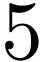
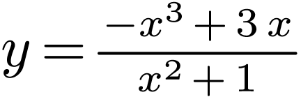

集合，，则
| A. | B.  |
C. | D. |
设，其中 ，
， 为实数，则
为实数，则
A.  ， ， |
B. ， |
| C. ， |
D. ， |
已知向量，，则
A.  |
B.  |
C.  |
D.  |
分别统计了甲、乙两位同学 周的各周课外体育运动时长(单位：h)，得如下茎叶图：
周的各周课外体育运动时长(单位：h)，得如下茎叶图：
则下列结论中错误的是
A. 甲同学周课外体育运动时长的样本中位数为
B.
乙同学周课外体育运动时长的样本平均数大于
C.
甲同学周课外体育运动时长大于的概率的估计值大于
D.
乙同学周课外体育运动时长大于的概率的估计值大于
若 ，
， 满足约束条件则的最大值是
满足约束条件则的最大值是
A.  |
B. |
C. |
D.  |
设为抛物线的焦点，点 在上，点，若，则
在上，点，若，则
| A. |
B.  |
C. |
D. |
执行右边的程序框图，输出的
| A. |
B. |
C. | D.  |
右图是下列四个函数中的某个函数在区间的大致图像，则该函数是
| A.  | B. | C. | D. |
在正方体 中，
中， ，分别为
，分别为 ，
， 的中点，则
的中点，则
| A. 平面平面 | B. 平面平面 |
| C. 平面平面 | D. 平面平面 |
已知等比数列 的前项和为，，则
的前项和为，，则
| A. | B. |
C. |
D. |
函数在区间的最小值，最大值分别为
A.  ， ， |
B. ， |
C. ， |
D. ， |
已知球 的半径为
的半径为 ，四棱锥的顶点为，底面的四个顶点均在球的球面上，则当该四棱锥的体积最大时，其高为
，四棱锥的顶点为，底面的四个顶点均在球的球面上，则当该四棱锥的体积最大时，其高为
| A. | B.  |
C.  |
D.  |
 为等差数列
为等差数列 项和.若
项和.若 ，
，

 ，
， ，已知
，已知 中，
中， 的中点．
的中点． ，
，
 时，求
时，求 的最大值;
的最大值; 的直线交
的直线交 ，
， 两点，过
两点，过 ，点
，点 满足
满足 中，曲线
中，曲线 .以坐标原点为极点，
.以坐标原点为极点， 的极坐标方程为
的极坐标方程为